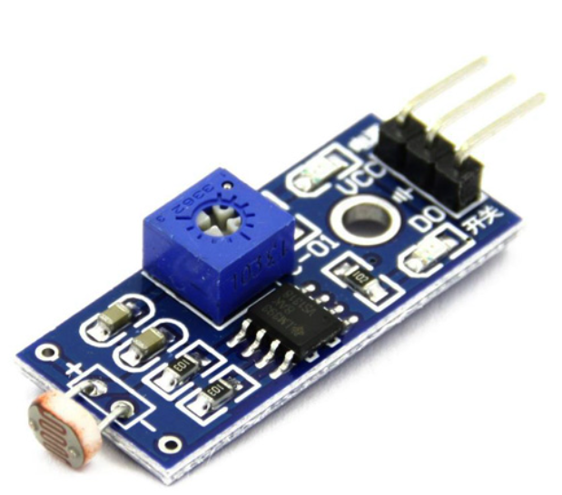

LDR Light Sensor
Measures light intensity based on resistance change.
Key Information
- Type: Photoresistor / Light Dependent Resistor (LDR)
- Principle: Resistance decreases with increasing light intensity
- Material: Cadmium Sulfide (CdS) is common
- Operating Voltage: Varies depending on circuit design (typically 5V with a voltage divider)
- Typical Resistance in Light: 5-10k Ohm
- Typical Resistance in Dark: 1M Ohm+
- Response Time: Relatively slow (tens to hundreds of milliseconds)
About the LDR Sensor
An LDR (Light Dependent Resistor), also known as a photoresistor, is a light-sensitive resistor. Its resistance decreases as the intensity of light falling on its surface increases. Conversely, in darkness, its resistance increases significantly.
LDRs are simple and inexpensive components often used in circuits where light detection is needed. They are typically used with a voltage divider circuit to convert the resistance change into a measurable voltage change, which can then be read by an analog input pin on a microcontroller like the Arduino.
Common applications include automatic street lights, light-activated alarms, dimmers, and simple light-sensing robots. While not as precise as photodiodes or phototransistors, their simplicity makes them popular for basic light detection tasks.